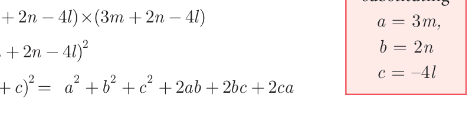
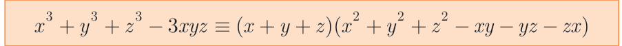
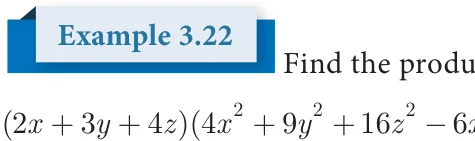
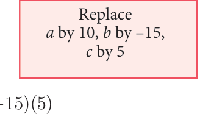
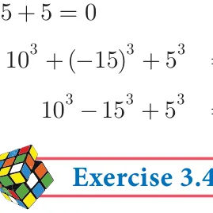

<!DOCTYPE html>
<html lang="en">
<head>
<meta charset="UTF-8">
<meta name="viewport" content="width=device-width,initial-scale=1">
<title>3.4 Algebraic Identities — Algebra</title>
<meta name="description" content="Class 9 Mathematics · Algebra · 3.4 Algebraic Identities">
<link rel="icon" href="data:image/svg+xml,<svg xmlns='http://www.w3.org/2000/svg' viewBox='0 0 100 100'><text y='.9em' font-size='90'>📘</text></svg>">
<link rel="stylesheet" href="../../../assets/book.css">
<link rel="stylesheet" href="https://cdn.jsdelivr.net/npm/katex@0.16.11/dist/katex.min.css" crossorigin="anonymous">
</head>
<body>
<header class="topbar">
<div class="topbar-in">
  <div class="crumb">
    <span class="c1"><a href="../../../index.html">Library</a> · <a href="../../index.html">Class 9 Mathematics</a></span>
    <span class="c2">Algebra · 3.4 Algebraic Identities</span>
  </div>
  <a class="tb-btn" data-nav="prev" href="../../03-algebra/07-exercise-3.3/index.html" title="Exercise 3.3">←</a>
  <details class="drawer"><summary class="tb-btn" title="Sections in this chapter">☰</summary>
<div class="drawer-panel"><div class="dh">Algebra</div><a href="../01-chapter-opener/index.html">Chapter opener; 3.1 Introduction</a><a href="../02-polynomials-3.2/index.html">3.2 Polynomials</a><a href="../03-exercise-3.1/index.html">Exercise 3.1</a><a href="../04-value-and-zeros-of-a-polynomial-3.2.2/index.html">3.2.2 Value and Zeros of a Polynomial</a><a href="../05-exercise-3.2/index.html">Exercise 3.2</a><a href="../06-remainder-theorem-3.3/index.html">3.3 Remainder Theorem</a><a href="../07-exercise-3.3/index.html">Exercise 3.3</a><a href="../08-algebraic-identities-3.4/index.html" aria-current="page">3.4 Algebraic Identities</a><a href="../09-exercise-3.4/index.html">Exercise 3.4</a><a href="../10-factorisation-3.5/index.html">3.5 Factorisation</a><a href="../11-exercise-3.5/index.html">Exercise 3.5</a><a href="../12-factorising-the-quadratic-polynomial-trinomial-of-the-type-3.5.2/index.html">3.5.2 Factorising the Quadratic Polynomial (Trinomial) of the type</a><a href="../13-exercise-3.6/index.html">Exercise 3.6</a><a href="../14-division-of-polynomials-3.6/index.html">3.6 Division of Polynomials</a><a href="../15-exercise-3.7/index.html">Exercise 3.7</a><a href="../16-factorisation-using-synthetic-division-3.6.3/index.html">3.6.3 Factorisation using Synthetic Division</a><a href="../17-exercise-3.8/index.html">Exercise 3.8; 3.7 Greatest Common Divisor (GCD)</a><a href="../18-exercise-3.9/index.html">Exercise 3.9</a><a href="../19-linear-equation-in-two-variables-3.8/index.html">3.8 Linear Equation in Two Variables</a><a href="../20-exercise-3.10/index.html">Exercise 3.10</a><a href="../21-exercise-3.11/index.html">Exercise 3.11</a><a href="../22-exercise-3.12/index.html">Exercise 3.12</a><a href="../23-exercise-3.13/index.html">Exercise 3.13</a><a href="../24-consistency-and-inconsistency-of-linear-equations-in-two-v-3.8.3/index.html">3.8.3 Consistency and Inconsistency of Linear Equations in Two Variables</a><a href="../25-exercise-3.14/index.html">Exercise 3.14</a><a href="../26-exercise-3.15/index.html">Exercise 3.15</a><a href="../27-summary/index.html">Points to Remember</a><a href="../28-ict-corner/index.html">ICT Corner-1</a></div></details>
  <a class="tb-btn" data-nav="next" href="../../03-algebra/09-exercise-3.4/index.html" title="Exercise 3.4">→</a>
  <button class="tb-btn" data-theme-toggle title="Toggle light / dark" aria-label="Toggle light or dark theme">◐</button>
</div>
<div class="progress"><span style="width:31.2%"></span></div>
</header>
<main class="wrap">
<div class="sec-head">
  <p class="eyebrow"><a href="../index.html">Chapter 3 · Algebra</a></p>
  <h1>3.4 Algebraic Identities</h1>
  <p class="sec-meta">Textbook pages 20–24 · 14 figures</p>
</div>
<article class="prose">
<p>An identity is an equality that remains true regardless of the values chosen for its variables.</p>
<p>We have already learnt about the following identities:</p>
<div class="mathblock"><p>(1) ( + ) \(\equiv +\) ab \(+ (2)\) ( - ) \(\equiv -\) ab +</p></div>
<figure class="fig wide"></figure>
<p>( ) ( + )( - ) \(\equiv -\) ( ) ( + )( + ) \(\equiv +( +\) ) +ab</p>
<p>( - ) ( + )( - ) ( + )( - )</p>
<h4 class="callout-h" id="s-solution">Solution</h4>
<ul class="qlist">
<li><span class="mk">(i)</span><span class="lt">\((3x + 4y)^{2}\) we have (a \(+b)^{2} = a^{2} + 2ab +b^{2}\)</span></li>
</ul>
<div class="mathblock"><p>\((3x + 4y) = (3x) + 2(3x)(4y)+(4y)\) put [a \(= 3x\), \(b = 4y]\)</p></div>
<div class="mathblock"><p>\(= 9x + 24xy +16y\)</p></div>
<ul class="qlist">
<li><span class="mk">(ii)</span><span class="lt">\((2a - 3b)^{2}\) we have (a \(- b)^{2} = a^{2} - 2ab +b^{2}\)</span></li>
</ul>
<div class="mathblock"><p>\((2a - 3b) = (2a) - 2 2( a)(3b)+(3b)\) put [a \(= 2a\), \(b = 3b]\)</p></div>
<div class="mathblock"><p>\(= 4a - 12ab + 9b\)</p></div>
<ul class="qlist">
<li><span class="mk">(iii)</span><span class="lt">\((5x + 4y)(5x - 4y)\) we have (a \(+b)(a -\) b) \(= a^{2} - b^{2}\)</span></li>
</ul>
<div class="mathblock"><p>\((5x + 4y)(5x - 4y) = (5x) - (4y)\) put [a \(= 5x b = 4y]\)</p><p>\(= 25x - 16y\)</p></div>
<ul class="qlist">
<li><span class="mk">(iv)</span><span class="lt">(m \(+ 5)(m - 8)\) we have (x \(+a)(x -\) b) \(= x^{2} +(a -\) b)x - ab</span></li>
</ul>
<div class="mathblock"><p>(m \(+ 5)(m - 8) = m +(5 - 8)m - (5)(8)\) put [x \(= m\), \(a = 5\), \(b = 8]\)</p></div>
<div class="mathblock"><p>\(=m - 3m - 40\)</p></div>
<div class="mathblock"><p>_{2} (a+b+c)</p></div>
<p>3.4.1 Expansion of Trinomial (a +b +c) a b c</p>
<p>We know that (x \(+y) = x + 2xy +y\)</p>
<p>Put \(x = a +b\), \(y = c a a\) ab ca</p>
<div class="mathblock"><p>Then, (a \(+b +c) =\) (a \(+b) + 2(a +b)(c)+c\)</p></div>
<div class="mathblock"><p>\(= a + 2ab +b + 2ac + 2bc +c b\) ab b2 bc</p></div>
<div class="mathblock"><p>\(= a +b +c + 2ab + 2bc + 2ca _{2}\)</p></div>
<aside class="sidenote"><p>c ca bc c</p></aside>
<div class="mathblock"><p>Thus, (a \(+b +c) \equiv a +b +c + 2ab + 2bc + 2ca\)</p></div>
<p>Example 3.17 _{2} Expand (a \(- +b\) c)</p>
<h4 class="callout-h" id="s-solution">Solution</h4>
<aside class="sidenote"><p>Progress Check</p></aside>
<p>Replacing ‘b’ by ‘-b ’ in the expansion of Expand the following and verify :</p>
<p>2 2 2 2 _{2} _{2}</p>
<div class="mathblock"><p>(a \(+b +c) = a +b +c + 2ab + 2bc + 2ca\) (a \(+b +c) =\) ( \(- - - a b\) c)</p><p>_{2} _{2} _{2} _{2} ( \(- +a b +c) =\) (a \(- - b\) c)</p></div>
<div class="mathblock"><p>(a \(+( - b)+c) = a +( -\) b) \(+c + 2a( - b)+ 2( - b\) c) \(+ 2ca\)</p></div>
<aside class="sidenote"><p>(a \(- b +c) =\) ( \(- +a b -\) c)</p><p>2 2</p></aside>
<p>2 2 2 _{2} _{2}</p>
<div class="mathblock"><p>\(= a +b +c - 2ab - 2bc + 2ca\) (a \(+b -\) c) = ( \(- - a b +c)\)</p></div>
<p>Example 3.18 _{2}</p>
<div class="mathblock"><p>Expand \((2x + 3y + 4z)\)</p></div>
<h4 class="callout-h" id="s-solution">Solution</h4>
<p>We know that,</p>
<div class="mathblock"><p>(a \(+b +c) = a +b +c + 2ab + 2bc + 2ca\)</p></div>
<p>Substituting, \(a = 2x,b = 3y\) andc \(= 4z\)</p>
<div class="mathblock"><p>\((2x + 3y + 4z) = (2x) +(3y) +(4z) + 2 2( x)(3y)+ 2(3y)(4z)+ 2(4z)(2x)\)</p></div>
<div class="mathblock"><p>\(= 4x + 9y +16z +12xy + 24yz +16xz\)</p></div>
<figure class="fig"></figure>
<p>Find the area of square whose side length is \(3 + -\)</p>
<h4 class="callout-h" id="s-solution">Solution</h4>
<p>Area of square = side ´ side</p>
<figure class="fig"></figure>
<p>= ( \(+ -\) ) \(\times\) ( \(+ -\) )</p>
<p>= ( \(+ -\) )</p>
<p>We know that, (a \(+ +\) ) \(= + + +\) ab + bc + ca</p>
<div class="mathblock"><p>3m \(+ 2n +( -\) 4l) = ( ) +( ) \(+( -\) ) + ( )( )+ 2 2( )( \(- )+\) ( - )( )</p></div>
<p>\(= + + +\) mn - ln - lm</p>
<p>Therefore, Area of square = [ \(+ + +\) mn - ln - lm] sq.units.</p>
<h3 id="s-3-4-2-identities-involving-product-of-three-binomials">3.4.2 Identities involving Product of Three Binomials</h3>
<p>(x \(+a)(x +b)(x +c) =\) [(x +a) (x +b)] (x +c)</p>
<p>= [ \(+( +\) ) \(+ab]( +\) )</p>
<p>= ( \()+( +\) )( )( )+abx \(+ +( +\) )( ) +abc</p>
<p>\(= +ax +bx\) +abx +cx +acx +bcx +abc</p>
<p>\(= +( + +\) ) +( +bc +ca) +abc</p>
<figure class="fig wide"></figure>
<figure class="fig"></figure>
<p>Expand the following:</p>
<div class="mathblock"><p>( ) ( + )( + )( + ) (ii ) \((3x - 1)(3x+ 2)(3x - 4)\)</p></div>
<h4 class="callout-h" id="s-solution">Solution</h4>
<p>We know that (x \(+a)(x +b)(x +c) = x +(a +b +c)x +(ab +bc +ca)\) +abc --(1)</p>
<figure class="fig side-fig"></figure>
<ul class="qlist">
<li><span class="mk">(i)</span><span class="lt">(x \(+ 5)(x + 6)(x + 4)\)</span></li>
</ul>
<div class="mathblock"><p>\(= x +(5 + 6 + 4)x +(30 + 24 + 20)x +(5)(6)(4)\)</p></div>
<div class="mathblock"><p>\(= x +15x + 74x +120\)</p></div>
<ul class="qlist">
<li><span class="mk">(ii)</span><span class="lt">\((3x - 1)(3x + 2)(3x - 4)\)</span></li>
</ul>
<div class="mathblock"><p>\(= (3x) +( - +1 2 - 4)(3x) + - -\) ( \(2 8 + 4)(3x)+( -\) )( )( - )</p></div>
<figure class="fig side-fig"></figure>
<div class="mathblock"><p>\(= 27x +( - 3 9) x +( - 6)(3x)+ 8\)</p></div>
<div class="mathblock"><p>\(= 27x - 27x - 18x + 8\)</p></div>
<p>3.4.3 Expansion of (x +y) and (x -y)</p>
<p>( + )( + )( + ) \(\equiv +( + +\) ) +(ab +bc +ca) +abc substituting \(a = = =\) in the identity</p>
<p>we get, ( + )( + )( + ) \(= +( + +\) ) +(yy +yy +yy) +yyy</p>
<figure class="fig wide"></figure>
<p>\(= +(\) ) +( ) +</p>
<h4 class="callout-h" id="s-solution">Solution</h4>
<p>We know that, ( - ) \(= - +\) xy -</p>
<div class="mathblock"><p>( - ) = ( ) \(- 3 5(\) ) ( )+ 3 5( )( ) - ( )</p><p>\(= - 3 25(\) )( )+ 3 5( )( ) - ( )</p></div>
<p>\(= - +\) ab - The following identity is also used:</p>
<figure class="fig wide"></figure>
<p>We can check this by performing the multiplication on the right hand side.</p>
<figure class="fig wide"></figure>
<figure class="fig"></figure>
<p>Find the product of</p>
<div class="mathblock"><p>( \(+ +\) )( \(+ + -\) xy \(- 12yz - 8zx)\)</p></div>
<h4 class="callout-h" id="s-solution">Solution</h4>
<p>We know that, (a \(+b +c)(a +b +c -\) ab - bc - ca) \(= a +b +c -\) 3abc</p>
<div class="mathblock"><p>\((2x + 3y + 4z)(4x + 9y +16z - 6xy - 12yz - 8zx)\)</p></div>
<div class="mathblock"><p>\(= (2x) +(3y) +(4z) - 3 2( x)(3y)(4z)\)</p><p>\(= 8x + 27y + 64z -\) 72xyz</p></div>
<figure class="fig"></figure>
<div class="mathblock"><p>Evaluate \(10 - 15 + 5\)</p></div>
<h4 class="callout-h" id="s-solution">Solution</h4>
<figure class="fig side-fig"></figure>
<p>We know that, if \(a + + =\) , then \(+ + =\) abc</p>
<p>Here, \(a +b +c = - + =\)</p>
<figure class="fig"></figure>
<div class="mathblock"><p>Therefore, \(10 +( -\) ) \(+ = 3 10(\) )( - )( )</p><p>\(- + = - 2250\)</p></div>
<ul class="qlist">
<li><span class="mk">1.</span><span class="lt">Expand the following:</span></li>
<li><span class="mk">(i)</span><span class="lt">(x \(+ 2y + 3z)\) (ii) ( \(- +p 2q + 3r)\)</span></li>
</ul>
<ul class="qlist">
<li><span class="mk">(iii)</span><span class="lt">\((2p + 3)(2 -\) )( - ) ( + )( - )( \(+ 4)\)</span></li>
<li><span class="mk">2.</span><span class="lt">Using algebraic identity, find the coefficients of x , x and constant term without</span></li>
</ul>
<p>actual expansion.</p>
<ul class="qlist">
<li><span class="mk">(i)</span><span class="lt">(x \(+ 5)(x + 6)(x + 7)\) (ii) \((2x + 3)(2x - 5)(2x - 6)\)</span></li>
</ul>
<ul class="qlist">
<li><span class="mk">3.</span><span class="lt">If (x \(+a)(x +b)(x +c) = x +14x + 59x + 70\), find the value of</span></li>
<li><span class="mk">(i)</span><span class="lt">a +b +c (ii) \(\frac{111}{abc} + +\) (iii) a +b +c (iv) \(\frac{abc}{bcacab} + +\)</span></li>
</ul>
<ul class="qlist">
<li><span class="mk">4.</span><span class="lt">Expand: _{3}</span></li>
<li><span class="mk">(i)</span><span class="lt">\((3a - 4b)\) (ii) x \(+ \frac{1}{y}\) </span></li>
</ul>
<p>_{3}  </p>
<ul class="qlist">
<li><span class="mk">5.</span><span class="lt">Evaluate the following by using identities:</span></li>
</ul>
<ul class="qlist">
<li><span class="mk">(i)</span><span class="lt">98 (ii) 1001</span></li>
<li><span class="mk">6.</span><span class="lt">If (x \(+y +\) z) \(= 9\) and (xy \(+yz +\) zx) \(= 26\), then find the value of \(x +y + z\) .</span></li>
</ul>
<ul class="qlist">
<li><span class="mk">7.</span><span class="lt">Find \(27a + 64b\) , if \(3a + 4b = 10\) and ab \(= 2\).</span></li>
</ul>
<ul class="qlist">
<li><span class="mk">8.</span><span class="lt">Find x -y , if \(x - y = 5\) and xy \(= 14\) .</span></li>
<li><span class="mk">9.</span><span class="lt">If \(a + \frac{1}{a} = 6\) , then find the value of \(a + a \frac{1}{3}\) .</span></li>
</ul>
<ul class="qlist">
<li><span class="mk">10.</span><span class="lt">If \(x + x \frac{1}{2} = 23\) , then find the value of \(x + \frac{131}{x3}\) and \(x + x\) .</span></li>
</ul>
<p>  _{3}</p>
<ul class="qlist">
<li><span class="mk">11.</span><span class="lt">If y \(- \frac{1}{y}\) = 27 , then find the value of \(y - y \frac{1}{3}\) .</span></li>
</ul>
</article>
<nav class="pager"><a class="" data-nav="prev" href="../../03-algebra/07-exercise-3.3/index.html"><span class="dir">← Previous</span><span class="t">Exercise 3.3</span><span class="ch">Algebra</span></a><a class="nx" data-nav="next" href="../../03-algebra/09-exercise-3.4/index.html"><span class="dir">Next →</span><span class="t">Exercise 3.4</span><span class="ch">Algebra</span></a></nav>
</main><footer class="site">Generated from the source textbook PDFs · text, figures and exercises belong to their respective publishers.</footer><script defer src="https://cdn.jsdelivr.net/npm/katex@0.16.11/dist/katex.min.js" crossorigin="anonymous"></script>
<script defer src="https://cdn.jsdelivr.net/npm/katex@0.16.11/dist/contrib/auto-render.min.js" crossorigin="anonymous"
  onload="renderMathInElement(document.body,{delimiters:[
    {left:'\\(',right:'\\)',display:false},
    {left:'$$',right:'$$',display:true},
    {left:'\\[',right:'\\]',display:true}],throwOnError:false,ignoredTags:['script','noscript','style','textarea','pre','code']})"></script>
<script src="../../../assets/book.js"></script>
<script defer src="../../../../assets/search.js?v=1789782769"></script>
<script defer src="../../../../assets/screenshot.js?v=2"></script>
</body>
</html>
